Tu próxima presa
F
Todas Me faltan Subir a 3 Completas
Genus Todo genus Fera Cogni Natura Varian Especial Fuente Toda fuente Cofre o tienda Boss de campo Boss de dungeon Dungeon Grieta o dungeon Grieta Agrupar Agrupar: fuente Agrupar: genus Agrupar: lugar
Álbum Lista
89 pets
11 Especiales ocultas · Mostrar
Lista para Elyos: las de Altgard las conseguís por la Grieta; las que se farmean en Verteron y Eltnen no figuran.Lista para Asmodian: las de Verteron las conseguís por la Grieta; las que se farmean en Altgard y Morheim no figuran.
Pet Por qué cuesta De dónde sale Cofres que la pueden dar
Aultross's Doppelganger
Solo cofres
Cofre de mascota misterioso 0,25% Cofre de mascota: Cognis 2,4% Cofre de mascota de progreso 0,5% La tengo: Clon de Aultross Dratona Tinkerer
Solo cofres
Cofre de mascota misterioso 0,25% Cofre de mascota: Cognis 2,4% Cofre de mascota de progreso 0,5% La tengo: Dratona peón Furious Feruk
Solo cofres
Cofre de mascota misterioso 0,25% Cofre de mascota: Cognis 2,4% Cofre de mascota de progreso 0,5% La tengo: Feruk frenético 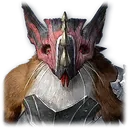
Mumu Overseer
Solo cofres
Cofre de mascota misterioso 0,25% Cofre de mascota: Cognis 2,4% Cofre de mascota de progreso 0,5% La tengo: Mumu supervisor Nueva Glossy Pink Puppy
Atelier Atelier: ya no disponible
Atelier (shop) USD 19.99, 1 por server, hasta mant. 10/11/2026 (ya no disponible) La tengo: Cachorrito rosa brillante Nueva Pumpkin Carriage
Shop de Halloween Shop de Halloween: ya no disponible
Shop de Halloween USD 19.99, 1 por server, hasta mant. 24/11/2026 (ya no disponible) La tengo: Carroza de la Calabaza Maldita White Bunny
Atelier
Atelier (shop) (ya no disponible) La tengo: Conejo blanco 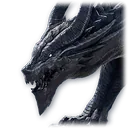
Black Dragon
Ultimate Founder's Pack
Daeva's Chest of Might (Ultimate Founder's Pack, pago) (ya no disponible) La tengo: Dragón negro Nueva Little Ghost
Shop de Halloween Shop de Halloween: ya no disponible
Shop de Halloween USD 19.99, 1 por server, hasta mant. 24/11/2026 (ya no disponible) La tengo: Fantasmita Nueva Chonky Hamster
Atelier
Atelier (shop) (ya no disponible) La tengo: Hámster rechoncho Wandering Merchant Lugi
Shugo Festival Merchant
Shugo Festival Merchant: 500 Centuryroot Tokens, 1 vez (evento) (ya no disponible) La tengo: Lugi del Comerciante ambulante Swift Lugi
Daeva Pass
Daeva Pass (ya no disponible) La tengo: Lugi veloz 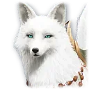
Azure Flame Kumiho
Atelier Atelier: ya no disponible
Atelier (shop) USD 19.99, 1 por server, hasta mant. 10/11/2026 (ya no disponible) La tengo: Nueve colas de fuego azul
Tsenka Merchant
Advance: Pet Chest (pre-registro) o Tsenka Merchant por 2M Kinah (ya no disponible) Anticipado: Cofre de mascota La tengo: Pagati 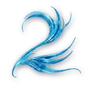
Nueva
Sin fuente confirmada
Sin fuente confirmada en global (ya no disponible) La tengo: Two Aberrant Odyle Spider
Solo cofres
Cofre de mascota misterioso 0,25% Cofre de mascota: Feras 1,5% Cofre de mascota de progreso 0,5% La tengo: Araña de Od variante 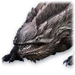
Ashen Basilisk
Solo cofres
Cofre de mascota misterioso 0,25% Cofre de mascota: Feras 1,5% Cofre de mascota de progreso 0,5% La tengo: Basilisk cenizo
Solo cofres
Cofre de mascota misterioso 0,25% Cofre de mascota: Feras 1,5% Cofre de mascota de progreso 0,5% La tengo: Coradon Venomous Insect Sram
Solo cofres
Cofre de mascota misterioso 0,25% Cofre de mascota: Feras 1,5% Cofre de mascota de progreso 0,5% La tengo: Insectoide de veneno mortal Sram Elite Keneire
Solo cofres
Cofre de mascota misterioso 0,25% Cofre de mascota: Feras 1,5% Cofre de mascota de progreso 0,5% La tengo: Keneire élite 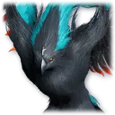
Ashen Lupyllini
Solo cofres
Cofre de mascota misterioso 0,25% Cofre de mascota: Feras 1,5% Cofre de mascota de progreso 0,5% La tengo: Lupyllini cenizo Grave Rat
Solo cofres
Cofre de mascota misterioso 0,25% Cofre de mascota: Feras 1,5% Cofre de mascota de progreso 0,5% La tengo: Rata de tumba Young Tog
Solo cofres
Cofre de mascota misterioso 0,25% Cofre de mascota: Feras 1,5% Cofre de mascota de progreso 0,5% La tengo: Tog joven Mutated Insectoid Valka
Solo cofres
Cofre de mascota misterioso 0,25% Cofre de mascota: Feras 1,5% Cofre de mascota de progreso 0,5% La tengo: Valka mutante 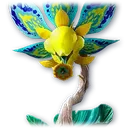
Solo cofres
Cofre de mascota misterioso 0,25% Cofre de mascota: Naturas 2,1% Cofre de mascota de progreso 0,5% La tengo: Dionae 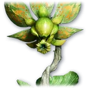
Forest Dionae
Solo cofres
Cofre de mascota misterioso 0,25% Cofre de mascota: Naturas 2,1% Cofre de mascota de progreso 0,5% La tengo: Dionae del bosque Ancient Spirit
Solo cofres
Cofre de mascota misterioso 0,25% Cofre de mascota: Naturas 2,1% Cofre de mascota de progreso 0,5% La tengo: Espíritu ancestral Ultimate Wind Spirit
Solo cofres
Cofre de mascota misterioso 0,25% Cofre de mascota: Naturas 2,1% Cofre de mascota de progreso 0,5% La tengo: Espíritu de viento supremo Elite Poisonous Spore Fungen
Solo cofres
Cofre de mascota misterioso 0,25% Cofre de mascota: Naturas 2,1% Cofre de mascota de progreso 0,5% La tengo: Fungen de esporas venenosas élite Dried Up Forest Guardian
Solo cofres
Cofre de mascota misterioso 0,25% Cofre de mascota: Naturas 2,1% Cofre de mascota de progreso 0,5% La tengo: Protector del bosque seco Drana Contaminant
Solo cofres
Cofre de mascota misterioso 0,25% Cofre de mascota: Varians 2,2% Cofre de mascota de progreso 0,5% La tengo: Contaminante de Drana Swamp Monster
Solo cofres
Cofre de mascota misterioso 0,25% Cofre de mascota: Varians 2,2% Cofre de mascota de progreso 0,5% La tengo: Monstruo de la ciénega Elite Soulless Corpse Gnat
Solo cofres
Cofre de mascota misterioso 0,25% Cofre de mascota: Varians 2,2% Cofre de mascota de progreso 0,5% La tengo: Mosquito de cadáver sin alma élite Gatekeeper Pinopi
Solo cofres
Cofre de mascota misterioso 0,25% Cofre de mascota: Varians 2,2% Cofre de mascota de progreso 0,5% La tengo: Portero Pinopi Pretor Veil Administrator
Eltnen · nv 80 · 1 spawn
Boss de campo Egetis, el Glotón (nv 80) en Eltnen (zona Elyos) Cofre de mascota misterioso 0,25% Cofre de mascota: Cognis 2,4% Cofre de mascota de progreso 0,5% La tengo: Administrador del velo de Pretor Elite Dratona
Morheim · nv 80 · 1 spawn
Boss de campo Balakh, el Coloso Depredador (nv 80) en Morheim (zona Asmodian) Cofre de mascota misterioso 0,25% Cofre de mascota: Cognis 2,4% Cofre de mascota de progreso 0,5% La tengo: Dratona de élite Elite Klaw
Verteron · nv 45 · 1 spawn
Boss de campo Guardia Teegant (nv 45) en Verteron (zona Elyos) Cofre de mascota misterioso 0,25% Cofre de mascota: Cognis 2,4% Cofre de mascota de progreso 0,5% La tengo: Klaw élite Elite Karnif
Morheim · nv 80 · 1 spawn
Boss de campo Renulf de la Ventisca Carmesí (nv 80) en Morheim (zona Asmodian) Cofre de mascota misterioso 0,25% Cofre de mascota: Feras 1,5% Cofre de mascota de progreso 0,5% La tengo: Karnif élite Elite Guardite
Verteron · nv 45 · 1 spawn
Boss de campo Ansas divina (nv 45) en Verteron (zona Elyos) Cofre de mascota misterioso 0,25% Cofre de mascota: Varians 2,2% Cofre de mascota de progreso 0,5% La tengo: Guardite élite 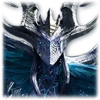
Phantasmal Lakshmi
Draupnir · boss
Boss de dungeon Lakshmi de ensueño en Draupnir Cofre de mascota misterioso 0,25% Cofre de mascota: Cognis 2,4% Cofre de mascota de progreso 0,5% La tengo: Lakshmi de ensueño Predator Saraswati
Draupnir · boss
Boss de dungeon Saraswati depredador en Draupnir Cofre de mascota misterioso 0,25% Cofre de mascota: Cognis 2,4% Cofre de mascota de progreso 0,5% La tengo: Saraswati depredador Red Spark Ignus
Templo de Fuego · boss
Boss de dungeon Fulgor rojo Ignus en Templo de Fuego Cofre de mascota misterioso 0,25% Cofre de mascota: Naturas 2,1% Cofre de mascota de progreso 0,5% La tengo: Fulgor rojo Ignus Black Smoke Murute
Templo de Fuego · boss
Boss de dungeon Humo negro Murute en Templo de Fuego Anticipado: Cofre de selección de mascota Cofre de mascota misterioso 0,25% Cofre de mascota: Naturas 2,1% Cofre de mascota de progreso 0,5% La tengo: Humo negro Murute
Cueva de Krao · boss
Boss de dungeon Harcon mejorado en Cueva de Krao Cofre de mascota misterioso 0,25% Cofre de mascota: Varians 2,2% Cofre de mascota de progreso 0,5% La tengo: Harcon 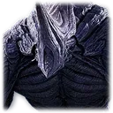
Sentinel K'nash
Cuna de la Nada · élite
Mob de dungeon Arma de Asalto Aéreo de la Brigada Bakarma en Cuna de la Nada Cofre de mascota misterioso 0,25% Cofre de mascota: Cognis 2,4% Cofre de mascota de progreso 0,5% La tengo: Celador K'nash Urugugu Brawler
Cañón de Urugugu · élite
Mob de dungeon Urugugu contendiente en Cañón de Urugugu Cofre de mascota misterioso 0,25% Cofre de mascota: Cognis 2,4% Cofre de mascota de progreso 0,5% La tengo: Urugugu contendiente Flame Barghest
Templo de Fuego · élite
Mob de dungeon Balgest de llamas en Templo de Fuego Mob de dungeon Sagrario Barghest en Forja Abismal: Ludra Cofre de mascota misterioso 0,25% Cofre de mascota: Feras 1,5% Cofre de mascota de progreso 0,5% La tengo: Balgest de llamas 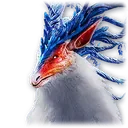
Isla del Aliento Azul · élite
Mob de dungeon Keneire en Isla del Aliento Azul (inferido) Cofre de mascota misterioso 0,25% Cofre de mascota: Feras 1,5% Cofre de mascota de progreso 0,5% La tengo: Kernon Elite Ursus
Isla del Aliento Azul · élite
Mob de dungeon Ursus de aliento azul en Isla del Aliento Azul (inferido) Cofre de mascota misterioso 0,25% Cofre de mascota: Feras 1,5% Cofre de mascota de progreso 0,5% La tengo: Ursus élite Ultimate Water Spirit
Arkanis Fragmentado · élite
Mob de dungeon Espíritu de agua del vacío en Arkanis Fragmentado Cofre de mascota misterioso 0,25% Cofre de mascota: Naturas 2,1% Cofre de mascota de progreso 0,5% La tengo: Espíritu de agua supremo Ultimate Fire Spirit
Templo de Fuego · élite
Mob de dungeon Espíritu de llamas despiadado en Templo de Fuego Cofre de mascota misterioso 0,25% Cofre de mascota: Naturas 2,1% Cofre de mascota de progreso 0,5% La tengo: Espíritu de fuego supremo Ultimate Earth Spirit
Isla Aérea de Vakron · élite
Mob de dungeon Espíritu de terreno iracundo en Isla Aérea de Vakron Cofre de mascota misterioso 0,25% Cofre de mascota: Naturas 2,1% Cofre de mascota de progreso 0,5% La tengo: Espíritu de tierra supremo 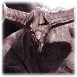
Flame Stone Guardian Statue
Templo de Fuego · élite
Mob de dungeon Estatua guardiana de piedra de llamas en Templo de Fuego Cofre de mascota misterioso 0,25% Cofre de mascota: Varians 2,2% Cofre de mascota de progreso 0,5% La tengo: Estatua guardiana de piedra de llamas 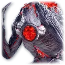
Krao Mutant
Cueva de Krao · élite
Mob de dungeon Mutación de Krao en Cueva de Krao Cofre de mascota misterioso 0,25% Cofre de mascota: Varians 2,2% Cofre de mascota de progreso 0,5% La tengo: Mutación de Krao 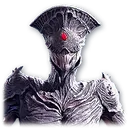
Krao Seal Guardian
Cueva de Krao · élite
Mob de dungeon Protector del sello Krao en Cueva de Krao Cofre de mascota misterioso 0,25% Cofre de mascota: Varians 2,2% Cofre de mascota de progreso 0,5% La tengo: Protector del sello Krao 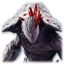
Krao Test Subject
Cueva de Krao · élite
Mob de dungeon Sujeto de prueba de Krao mejorado en Cueva de Krao Cofre de mascota misterioso 0,25% Cofre de mascota: Varians 2,2% Cofre de mascota de progreso 0,5% La tengo: Sujeto de prueba de Krao 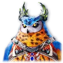
Aullaeu Shaman
Verteron · nv 27 · 15 spawns
Mob de dungeon Urugugu mago en Cañón de Urugugu Aullaeu aprendiz de brujo (nv 27) en Verteron: 15 spawnsCofre de mascota misterioso 0,25% Cofre de mascota: Cognis 2,4% Cofre de mascota de progreso 0,5% La tengo: Aullaeu brujo Krall Warshaman
Verteron · nv 41 · 32 spawns
Mob de dungeon Krall sanador modificado en Base de Investigación Deus Krall chamán (nv 21) en Verteron: 10 spawnsKrall sanador modificado (nv 41) en Verteron: 32 spawnsCofre de mascota misterioso 0,25% Cofre de mascota: Cognis 2,4% Cofre de mascota de progreso 0,5% La tengo: Krall chamán Krall Warrior
Verteron · nv 41 · 22 spawns
Mob de dungeon Krall combatiente modificado en Base de Investigación Deus Krall soldado de asalto (nv 21) en Verteron: 12 spawnsKrall guerrero modificado (nv 41) en Verteron: 22 spawnsSujeto de prueba de Krall (nv 43) en Verteron: 18 spawnsCofre de mascota misterioso 0,25% Cofre de mascota: Cognis 2,4% Cofre de mascota de progreso 0,5% La tengo: Krall guerrero 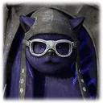
Addicted Shulak Cart Worker
Altgard · nv 36 · 29 spawns
Mob de dungeon Shulak carretero mutado en Caverna del Cuerno Feroz Shulak carretero impetuoso (nv 36) en Altgard: 29 spawnsCofre de mascota misterioso 0,25% Cofre de mascota: Cognis 2,4% Cofre de mascota de progreso 0,5% La tengo: Shulak carretero envenenado 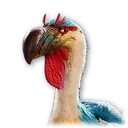
Verteron · nv 11 · 53 spawns
Mob de dungeon Crestlich en Isla del Aliento Azul (inferido) Crestlich pico de piedra (nv 11) en Verteron: 53 spawnsCrestlich hembra de del Río Ellun (nv 18) en Verteron: 29 spawnsCrestlich hembra de la Meseta (nv 33) en Verteron: 41 spawnsCofre de mascota misterioso 0,25% Cofre de mascota: Feras 1,5% Cofre de mascota de progreso 0,5% La tengo: Crestlich 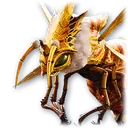
Giant Bee
Verteron · nv 27 · 14 spawns
Mob de dungeon Abeja del jardín de rosas en Isla del Aliento Azul (inferido) Mob de dungeon Abeja reina feroz en Isla Aérea de Vakron Abeja de rayas gigante (nv 27) en Verteron: 14 spawnsCofre de mascota misterioso 0,25% Cofre de mascota: Feras 1,5% Cofre de mascota de progreso 0,5% La tengo: Rey abeja
Verteron · nv 32-33 · 146 spawns
Mob de dungeon Sparkie en Isla del Aliento Azul (inferido) Sparkie salvaje (nv 18) en Verteron: 10 spawnsSparkie de la pradera (nv 18) en Verteron: 75 spawnsSparkie de Od de la Meseta (nv 32-33) en Verteron: 146 spawnsSparkie del Bosque Aullaeu (nv 27) en Verteron: 19 spawnsSparkie de tierras altas (nv 30) en Verteron: 28 spawnsCofre de mascota misterioso 0,25% Cofre de mascota: Feras 1,5% Cofre de mascota de progreso 0,5% La tengo: Sparkie 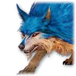
Verteron · nv 40 · 60 spawns
Mob de dungeon Zaif en Isla del Aliento Azul (inferido) Zaif de la Colina Rocosa (nv 32) en Verteron: 8 spawnsZaif del bosque de la Meseta (nv 35) en Verteron: 27 spawnsZaif de la Meseta (nv 33) en Verteron: 57 spawnsZaif de la colina (nv 40) en Verteron: 60 spawnsCofre de mascota misterioso 0,25% Registro previo: Cofre de mascota Cofre de mascota: Feras 1,5% Cofre de mascota de progreso 0,5% La tengo: Zaif Dry Leaf Agrint
Verteron · nv 25 · 32 spawns
Mob de dungeon Agrint de hojas secas del crepúsculo en instancia sin identificar Agrint del bosque (nv 25) en Verteron: 32 spawnsCofre de mascota misterioso 0,25% Cofre de mascota: Naturas 2,1% Cofre de mascota de progreso 0,5% La tengo: Agrint de hojas secas 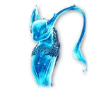
Lesser Water Spirit
Verteron · nv 16 · 34 spawns
Mob de dungeon Espíritu de agua fragmentado en Arkanis Fragmentado Espíritu de agua (nv 16) en Verteron: 34 spawnsEspíritu de agua de eternidad (nv 51) en Verteron: 10 spawnsCofre de mascota misterioso 0,25% Cofre de mascota: Naturas 2,1% Cofre de mascota de progreso 0,5% La tengo: Espíritu de agua inferior 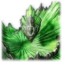
Odyle Stone Spirit
Altgard · nv 46 · 10 spawns
Mob de dungeon Espíritu de roca de Od en Isla Aérea de Vakron Espíritu de Od desgastada (nv 46) en Altgard: 10 spawnsCofre de mascota misterioso 0,25% Cofre de mascota: Naturas 2,1% Cofre de mascota de progreso 0,5% La tengo: Espíritu de piedra de Od Lesser Earth Spirit
Verteron · nv 51 · 13 spawns
Mob de dungeon Espíritu de roca en Isla Aérea de Vakron Espíritu de tierra de eternidad (nv 51) en Verteron: 13 spawnsCofre de mascota misterioso 0,25% Cofre de mascota: Naturas 2,1% Cofre de mascota de progreso 0,5% La tengo: Espíritu de tierra inferior 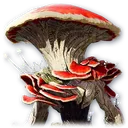
Verteron · nv 12 · 56 spawns
Mob de dungeon Fungen en Isla del Aliento Azul (inferido) Fungen de capucha roja (nv 12) en Verteron: 56 spawnsCofre de mascota misterioso 0,25% Cofre de mascota: Naturas 2,1% Cofre de mascota de progreso 0,5% La tengo: Fungen Konutin Worker
Verteron · nv 24 · 30 spawns
Mob de dungeon Konutin adoctrinado en Cañón de Urugugu Konutin trabajador de Tolbas (nv 24) en Verteron: 30 spawnsAnticipado: Cofre de selección de mascota Cofre de mascota misterioso 0,25% Cofre de mascota: Naturas 2,1% Cofre de mascota de progreso 0,5% La tengo: Konutin trabajador 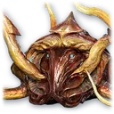
Congealed Drana
Altgard · nv 12 · 26 spawns
Mob de dungeon Masa de Drana coagulado en Cuna de la Nada Drana coagulado (nv 12) en Altgard: 26 spawnsCofre de mascota misterioso 0,25% Cofre de mascota: Varians 2,2% Cofre de mascota de progreso 0,5% La tengo: Drana coagulado Duduka Trebuchet Worker
Altgard · nv 42 · 44 spawns
Mob de dungeon Duduka lanzapiedras invocado en Caverna del Cuerno Feroz Mob de dungeon Duduka hondero feroz en Caverna del Cuerno Feroz Duduka lanzapiedras (nv 42) en Altgard: 44 spawnsCofre de mascota misterioso 0,25% Cofre de mascota: Varians 2,2% Cofre de mascota de progreso 0,5% La tengo: Duduka lanzapiedras Duduka Worker
Altgard · nv 41 · 75 spawns
Mob de dungeon Duduka trabajador invocado en Caverna del Cuerno Feroz Mob de dungeon Duduka trabajador feroz en Caverna del Cuerno Feroz Duduka trabajador (nv 41) en Altgard: 75 spawnsCofre de mascota misterioso 0,25% Cofre de mascota: Varians 2,2% Cofre de mascota de progreso 0,5% La tengo: Duduka trabajador Cadaver Cleaner
Altgard · nv 34 · 61 spawns
Mob de dungeon Limpiador de cadáveres del templo en instancia sin identificar Limpiador de cadáveres de las ruinas (nv 24) en Altgard: 17 spawnsLimpiador de cadáveres feroz (nv 34) en Altgard: 61 spawnsCofre de mascota misterioso 0,25% Cofre de mascota: Varians 2,2% Cofre de mascota de progreso 0,5% La tengo: Limpiador de cadáveres
Altgard · nv 44 · 26 spawns
Mob de dungeon Sangre venenosa alterada en instancia sin identificar Mudthorn envenenado (nv 36) en Altgard: 11 spawnsRestos de subespacio (nv 44) en Altgard: 26 spawnsCofre de mascota misterioso 0,25% Cofre de mascota: Varians 2,2% Cofre de mascota de progreso 0,5% La tengo: Mudthorn Pino
Verteron · nv 27 · 6 spawns
Mob de dungeon Pinno engañado en Cañón de Urugugu Pinno trabajador (nv 27) en Verteron: 6 spawnsPinno obrero (nv 27) en Verteron: 6 spawnsCofre de mascota misterioso 0,25% Cofre de mascota: Varians 2,2% Cofre de mascota de progreso 0,5% La tengo: Pinno 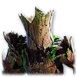
Pino Worker
Verteron · nv 28 · 11 spawns
Mob de dungeon Pinno iracundo en Cañón de Urugugu Pinno trabajador fiero (nv 28) en Verteron: 11 spawnsCofre de mascota misterioso 0,25% Cofre de mascota: Varians 2,2% Cofre de mascota de progreso 0,5% La tengo: Pinno trabajador Poison Blood
Altgard · nv 29 · 28 spawns
Mob de dungeon Monstruo del Abismo de Muspel en Forja Abismal: Ludra Sangre venenosa maldita (nv 29) en Altgard: 28 spawnsSangre venenosa inestable (nv 47) en Altgard: 25 spawnsCofre de mascota misterioso 0,25% Cofre de mascota: Varians 2,2% Cofre de mascota de progreso 0,5% La tengo: Sangre venenosa
Altgard · nv 29 · 10 spawns
Mob de dungeon Slime del mar profundo en instancia sin identificar Mob de dungeon Slime del mar profundo en Isla del Aliento Azul (inferido) Slime violento (nv 29) en Altgard: 10 spawnsCofre de mascota misterioso 0,25% Cofre de mascota: Varians 2,2% Cofre de mascota de progreso 0,5% La tengo: Slime Parasite Swarm
Altgard · nv 36 · 11 spawns
Mob de dungeon Gusano del vacío famélico en Draupnir Mob de dungeon Swarm parásito del subespacio en Cuna de la Nada Insectoide mineral gigante adulto (nv 36) en Altgard: 11 spawnsCofre de mascota misterioso 0,25% Cofre de mascota: Varians 2,2% Cofre de mascota de progreso 0,5% La tengo: Swarm parásito Biruta Herbalist
Altgard · nv 17 · 4 spawns
Biruta herbolario (nv 17) en Altgard: 4 spawnsCofre de mascota misterioso 0,25% Cofre de mascota: Cognis 2,4% Cofre de mascota de progreso 0,5% La tengo: Biruta herbolario Enhanced Krall Combatant
Verteron · nv 22 · 27 spawns
Krall combatiente mejorado (nv 22) en Verteron: 27 spawnsCofre de mascota misterioso 0,25% Cofre de mascota: Cognis 2,4% Cofre de mascota de progreso 0,5% La tengo: Krall combatiente mejorado Krall Laborer
Verteron · nv 21 · 27 spawns
Krall soldado armado (nv 21) en Verteron: 27 spawnsKrall centinela (nv 21) en Verteron: 19 spawnsKrall obrero mutado (nv 41) en Verteron: 11 spawnsCofre de mascota misterioso 0,25% Cofre de mascota: Cognis 2,4% Cofre de mascota de progreso 0,5% La tengo: Krall obrero Enhanced Krall Sentry
Verteron · nv 22 · 22 spawns
Krall vigilante mejorado (nv 22) en Verteron: 22 spawnsCofre de mascota misterioso 0,25% Cofre de mascota: Cognis 2,4% Cofre de mascota de progreso 0,5% La tengo: Krall vigilante mejorado 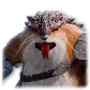
Mumu Warrior
Altgard · nv 41 · 70 spawns
Mumu guarda (nv 32) en Altgard: 61 spawnsMumu guerrero de Gribade (nv 40) en Altgard: 22 spawnsMumu celador (nv 41) en Altgard: 70 spawnsCofre de mascota misterioso 0,25% Cofre de mascota: Cognis 2,4% Cofre de mascota de progreso 0,5% La tengo: Mumu guerrero 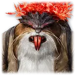
Mumu Worker
Altgard · nv 32 · 83 spawns
Mumu trabajador (nv 32) en Altgard: 83 spawnsMumu trabajador fugitivo (nv 33) en Altgard: 33 spawnsCofre de mascota misterioso 0,25% Cofre de mascota: Cognis 2,4% Cofre de mascota de progreso 0,5% La tengo: Mumu trabajador Withered Branch Spider
Altgard · nv 11-40 · 306 spawns
Araña de rama seca (nv 11-40) en Altgard: 306 spawnsCofre de mascota misterioso 0,25% Cofre de mascota: Feras 1,5% Cofre de mascota de progreso 0,5% La tengo: Araña de rama seca
Altgard · nv 10 · 132 spawns
Topo de caparazón rojo (nv 10) en Altgard: 132 spawnsArmadon árido (nv 21) en Altgard: 17 spawnsCofre de mascota misterioso 0,25% Cofre de mascota: Feras 1,5% Cofre de mascota de progreso 0,5% La tengo: Armadon 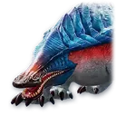
Aberrant Armadon
Verteron · nv 12 · 62 spawns
Armadon brillante (nv 12) en Verteron: 62 spawnsArmadon salvaje de la Meseta (nv 33) en Verteron: 38 spawnsCofre de mascota misterioso 0,25% Cofre de mascota: Feras 1,5% Cofre de mascota de progreso 0,5% La tengo: Armadon mutante
Altgard · nv 21 · 16 spawns
Basilisk de ceniza negra (nv 21) en Altgard: 16 spawnsCofre de mascota misterioso 0,25% Cofre de mascota: Feras 1,5% Cofre de mascota de progreso 0,5% La tengo: Basilisk 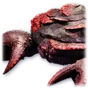
Aberrant Potcrab
Verteron · nv 41 · 26 spawns
Cantiesto mutante de Drana (nv 41) en Verteron: 26 spawnsCangrejo de musgo rubí (nv 46) en Verteron: 7 spawnsCofre de mascota misterioso 0,25% Cofre de mascota: Feras 1,5% Cofre de mascota de progreso 0,5% La tengo: Cantiesto mutante Male Crestlich
Verteron · nv 18 · 12 spawns
Crestlich macho de del Río Ellun (nv 18) en Verteron: 12 spawnsCrestlich macho de la Meseta (nv 33) en Verteron: 11 spawnsCofre de mascota misterioso 0,25% Cofre de mascota: Feras 1,5% Cofre de mascota de progreso 0,5% La tengo: Crestlich macho 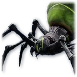
Baby Odyle Spider
Verteron · nv 16 · 8 spawns
Araña de Od costera (nv 16) en Verteron: 8 spawnsCofre de mascota misterioso 0,25% Cofre de mascota: Feras 1,5% Cofre de mascota de progreso 0,5% La tengo: Cría de araña de Od Cadaver Insectoid
Altgard · nv 12 · 16 spawns
Gusano cadáver de Drana (nv 12) en Altgard: 16 spawnsCofre de mascota misterioso 0,25% Cofre de mascota: Feras 1,5% Cofre de mascota de progreso 0,5% La tengo: Insectoide cadáver Mutated Cadaver Insectoid
Verteron · nv 27 · 35 spawns
Araña de la cuesta (nv 27) en Verteron: 35 spawnsCofre de mascota misterioso 0,25% Cofre de mascota: Feras 1,5% Cofre de mascota de progreso 0,5% La tengo: Insectoide cadáver mutado
Verteron · nv 32 · 64 spawns
Karnif feroz (nv 25) en Verteron: 6 spawnsKarnif de Tolbas (nv 24) en Verteron: 8 spawnsKarnif atroz de Tolbas (nv 24) en Verteron: 9 spawnsKarnif de melena resistente de la Meseta (nv 32) en Verteron: 64 spawnsKarnif de la Meseta (nv 34) en Verteron: 46 spawnsKarnif domesticado (nv 40) en Verteron: 60 spawnsCofre de mascota misterioso 0,25% Cofre de mascota: Feras 1,5% Cofre de mascota de progreso 0,5% La tengo: Karnif 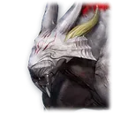
Tamed Karnif
Altgard · nv 37 · 56 spawns
Karnif de la Legión de la Cuchilla (nv 24) en Altgard: 8 spawnsBestia domesticada de la Legión de la Cuchilla (nv 37) en Altgard: 56 spawnsCofre de mascota misterioso 0,25% Cofre de mascota: Feras 1,5% Cofre de mascota de progreso 0,5% La tengo: Karnif domesticado 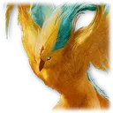
Verteron · nv 34 · 31 spawns
Lupyllini de cola emplumada (nv 34) en Verteron: 31 spawnsCofre de mascota misterioso 0,25% Cofre de mascota: Feras 1,5% Cofre de mascota de progreso 0,5% La tengo: Lupyllini Cave Bat
Verteron · nv 41 · 11 spawns
Murciélago mutante de Drana (nv 41) en Verteron: 11 spawnsCofre de mascota misterioso 0,25% Cofre de mascota: Feras 1,5% Cofre de mascota de progreso 0,5% La tengo: Murciélago de cueva
Verteron · nv 14 · 25 spawns
Skama fétido (nv 14) en Verteron: 25 spawnsSkama del lago (nv 18) en Verteron: 16 spawnsSkama mutante de Drana (nv 41) en Verteron: 8 spawnsCofre de mascota misterioso 0,25% Cofre de mascota: Feras 1,5% Cofre de mascota de progreso 0,5% La tengo: Skama
Altgard · nv 41 · 65 spawns
Tayga del escuadrón de reconocimiento (nv 40) en Altgard: 13 spawnsTayga de la unidad de guarda (nv 40) en Altgard: 12 spawnsTayga domesticado (nv 41) en Altgard: 65 spawnsCofre de mascota misterioso 0,25% Cofre de mascota: Feras 1,5% Cofre de mascota de progreso 0,5% La tengo: Tayga
Altgard · nv 18 · 10 spawns
Tog (nv 18) en Altgard: 10 spawnsCofre de mascota misterioso 0,25% Cofre de mascota: Feras 1,5% Cofre de mascota de progreso 0,5% La tengo: Tog Mutated Ursus
Altgard · nv 21 · 18 spawns
Ursus cenizo (nv 21) en Altgard: 18 spawnsCofre de mascota misterioso 0,25% Cofre de mascota: Feras 1,5% Cofre de mascota de progreso 0,5% La tengo: Ursus mutado Ashen Agrint
Altgard · nv 48 · 8 spawns
Agrint inestable (nv 48) en Altgard: 8 spawnsCofre de mascota misterioso 0,25% Cofre de mascota: Naturas 2,1% Cofre de mascota de progreso 0,5% La tengo: Agrint cenizo 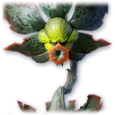
Ashen Dionae
Altgard · nv 21 · 14 spawns
Dionae ceniza (nv 21) en Altgard: 14 spawnsCofre de mascota misterioso 0,25% Cofre de mascota: Naturas 2,1% Cofre de mascota de progreso 0,5% La tengo: Dionae ceniza 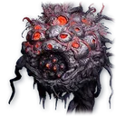
Drana Spore
Verteron · nv 47 · 60 spawns
Espora mutante rubí (nv 47) en Verteron: 60 spawnsCofre de mascota misterioso 0,25% Cofre de mascota: Naturas 2,1% Cofre de mascota de progreso 0,5% La tengo: Espora Drana
Verteron · nv 12 · 32 spawns
Fungie de capucha roja (nv 12) en Verteron: 32 spawnsCofre de mascota misterioso 0,25% Cofre de mascota: Naturas 2,1% Cofre de mascota de progreso 0,5% La tengo: Fungie Mutated Forest Guardian
Altgard · nv 48 · 25 spawns
Protector del bosque mutado (nv 22) en Altgard: 18 spawnsProtector del bosque inestable (nv 48) en Altgard: 25 spawnsCofre de mascota misterioso 0,25% Cofre de mascota: Naturas 2,1% Cofre de mascota de progreso 0,5% La tengo: Protector del bosque mutado Forest Specter
Verteron · nv 33 · 23 spawns
Espíritu de vid del cañón (nv 33) en Verteron: 23 spawnsÁnima de enredadera turbia (nv 44) en Verteron: 23 spawnsCofre de mascota misterioso 0,25% Cofre de mascota: Naturas 2,1% Cofre de mascota de progreso 0,5% La tengo: Ánima del bosque Faded Predator
Altgard · nv 35 · 15 spawns
Depredador desgastado (nv 35) en Altgard: 15 spawnsCofre de mascota misterioso 0,25% Cofre de mascota: Varians 2,2% Cofre de mascota de progreso 0,5% La tengo: Depredador desgastado 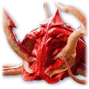
Faded Drana
Altgard · nv 35 · 13 spawns
Masa desgastada (nv 35) en Altgard: 13 spawnsCofre de mascota misterioso 0,25% Cofre de mascota: Varians 2,2% Cofre de mascota de progreso 0,5% La tengo: Drana desgastado 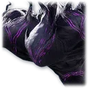
Dark Spirit
Verteron · nv 33 · 34 spawns
Espíritu corrupto (nv 33) en Verteron: 34 spawnsEspíritu de oscuridad errabundo (nv 45) en Verteron: 20 spawnsCofre de mascota misterioso 0,25% Cofre de mascota: Varians 2,2% Cofre de mascota de progreso 0,5% La tengo: Espíritu de oscuridad Faded Floater
Altgard · nv 35 · 20 spawns
Flotante desgastado (nv 35) en Altgard: 20 spawnsCofre de mascota misterioso 0,25% Cofre de mascota: Varians 2,2% Cofre de mascota de progreso 0,5% La tengo: Flotante desgastado
Verteron · nv 36 · 33 spawns
Guardite descontrolado (nv 36) en Verteron: 33 spawnsCofre de mascota misterioso 0,25% Cofre de mascota: Varians 2,2% Cofre de mascota de progreso 0,5% La tengo: Guardite Watcher Guardite
Verteron · nv 37 · 44 spawns
Guardite contaminado (nv 37) en Verteron: 44 spawnsCofre de mascota misterioso 0,25% Cofre de mascota: Varians 2,2% Cofre de mascota de progreso 0,5% La tengo: Guardite de vigilancia Drakana Kalgolem
Altgard · nv 11 · 13 spawns
Kalgolem del Zona de Caída (nv 11) en Altgard: 13 spawnsCofre de mascota misterioso 0,25% Cofre de mascota: Varians 2,2% Cofre de mascota de progreso 0,5% La tengo: Kalgolem Drakana Soulless Corpse Gnat
Altgard · nv 33 · 22 spawns
Mosquito de cadáver sin alma (nv 33) en Altgard: 22 spawnsCofre de mascota misterioso 0,25% Cofre de mascota: Varians 2,2% Cofre de mascota de progreso 0,5% La tengo: Mosquito de cadáver sin alma Drana Mutant
Altgard · nv 10 · 50 spawns
Mutación retorcida (nv 10) en Altgard: 50 spawnsCofre de mascota misterioso 0,25% Cofre de mascota: Varians 2,2% Cofre de mascota de progreso 0,5% La tengo: Mutación de Drana 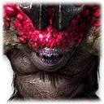
Distorted Mutant
Altgard · nv 30 · 20 spawns
Protector Espíritu infestado (nv 30) en Altgard: 20 spawnsCofre de mascota misterioso 0,25% Cofre de mascota: Varians 2,2% Cofre de mascota de progreso 0,5% La tengo: Mutación distorsionada Vigilant Oculazen
Altgard · nv 32 · 19 spawns
Oculazen de vigía (nv 32) en Altgard: 19 spawnsCofre de mascota misterioso 0,25% Cofre de mascota: Varians 2,2% Cofre de mascota de progreso 0,5% La tengo: Oculazen de vigía Drana Slime
Altgard · nv 11 · 21 spawns
Slime de Drana (nv 11) en Altgard: 21 spawnsCofre de mascota misterioso 0,25% Cofre de mascota: Varians 2,2% Cofre de mascota de progreso 0,5% La tengo: Slime de Drana Drana Swarm
Verteron · nv 46 · 30 spawns
Swarm de Drana rubí (nv 46) en Verteron: 30 spawnsCofre de mascota misterioso 0,25% Cofre de mascota: Varians 2,2% Cofre de mascota de progreso 0,5% La tengo: Swarm de Drana Nada con esos filtros.
Limpiar filtros
¿No usás Questlog? Las 89 78 pets en una grilla: tocás cada una hasta su nivel y listo.
¿Usás la app gratuita de questlog.gg (medidor de DPS y overlays) mientras jugás? Tu colección y niveles ya están en tu PC: traelos en segundos.
%APPDATA%\Questlog\aion-2 1 Win+E y pegá la carpetachecklist.json characters.json combat-state.json 2 Buscá characters.jsonSoltalo acá 3 Arrastralo a esta página
%APPDATA%\Questlog\aion-2
Abrí el explorador de archivos (Win+E), pegá en la barra de arriba y Enter. Después arrastrá characters.json acá.
Se lee en tu navegador, no se sube nada. La colección es por server: sirve cualquier personaje tuyo de ese server.
Soltá el characters.json en cualquier parte de la página
Tu colección vive solo en este navegador. Guardá un link (sirve también para pasarla al celu o a la PC) o un archivo de respaldo.
Hay cambios sin respaldar.
Borrar mi colección de este navegador
Zona Asmodian Zona Elyos : entrás por la Grieta. Nivel 45+, abre cada 3 h (el portal queda abierto ~10 min), 60 min adentro.
Nv 1 Velocidad de montura en tierra +1 Nv 2 Precisión +1 · Velocidad de montura en tierra +2 Nv 3 Precisión +2 · DEX +1 · Velocidad de montura en tierra +3
1 2 3 4 5 6 7 8 9
Nv 1 HP máx. +10 Nv 2 Crítico +1 · HP máx. +20 Nv 3 Crítico +2 · HP máx. +30 · STR +1
1 2 3 4 5 6 7 8 9
Nv 1 SP máx. +300 Nv 2 Resistencia a crítico +1 · SP máx. +600 Nv 3 AGI +1 · Resistencia a crítico +2 · SP máx. +900
1 2 3 4 5 6 7 8 9
Nv 1 Costo de sprint de montura +10 Nv 2 Evasión +1 · Costo de sprint de montura +20 Nv 3 CON +1 · Evasión +2 · Costo de sprint de montura +30
Costo de sprint: valor tal cual en los datos de questlog, que no aclaran si lo sube o lo baja.
1 2 3 4 5 6 7 8 9
Sin bonus de equipar en los datos de questlog.
1 2 3 4 5 6 7 8 9
Tocá una casilla para ver qué puede tirar ese slot, cuánto cuesta bloquearlo y su nivel de desbloqueo.
Bestiario Esquivo
Datos de questlog.gg (global) del 06/11/2026. Las dos listas salen de la misma regla: una pet entra si ningún mob de tu mapa la suelta.
Efectos: sí no
Cofres: el Cofre de mascota de progreso sale de recompensas de dungeon. El Cofre de mascota por genus (Feras/Cognis/Naturas/Varians) sale de logros y del Daeva Pass. El Cofre de mascota misterioso sale del Daeva Pass y de la tienda de eventos. Cualquier pet normal también puede salir en el Black Cloud Merchant (stock rotativo, se renueva cada hora). Si ya tenés la pet, el cofre te da un alma.
Ojo: "Mob de dungeon" sale de la tabla de drop del mob en questlog (ej. Mutación de Krao suelta Alma: Mutación de Krao en la Cueva de Krao). En "Isla del Aliento Azul (inferido)" la dungeon la deduje por el rango de IDs y el nivel, porque questlog no le asigna dungeon al trash. Grieta = Spacetime Rift: desde nivel 45, abre cada 3 h y te da 60 min en el mapa enemigo (Altgard para Elyos, Verteron para Asmodian). Los boss de campo de Morheim y Eltnen quedan en territorio enemigo para una de las facciones y la Grieta de nivel 45 no lleva ahí: cómo se llega no está verificado.
Fuentes: datos, mapas, spawns y retratos de questlog.gg · aion2vault · wikily · expcarry (Grieta) . Aion 2 y sus imágenes son de sus dueños.
Soltá characters.json acá
o tu respaldo .json · se lee en tu navegador, no se sube nada · Esc para cancelar